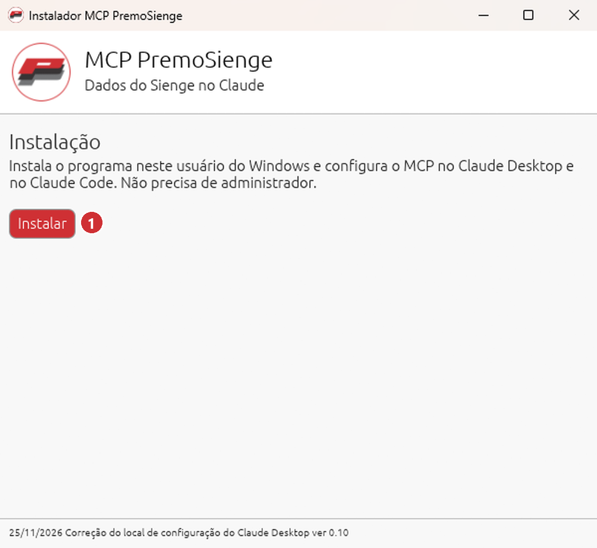
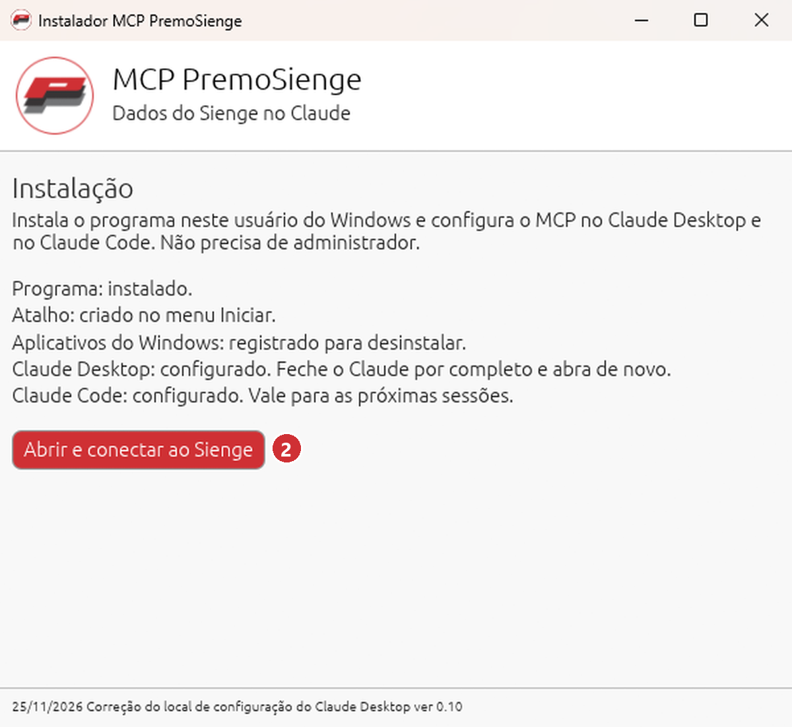
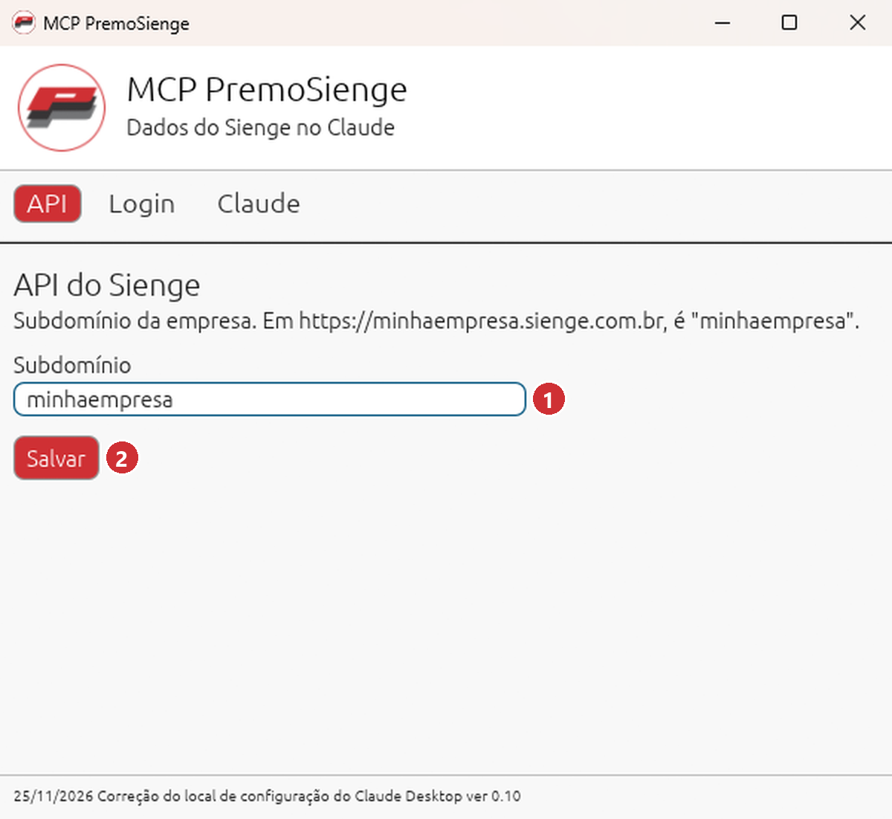
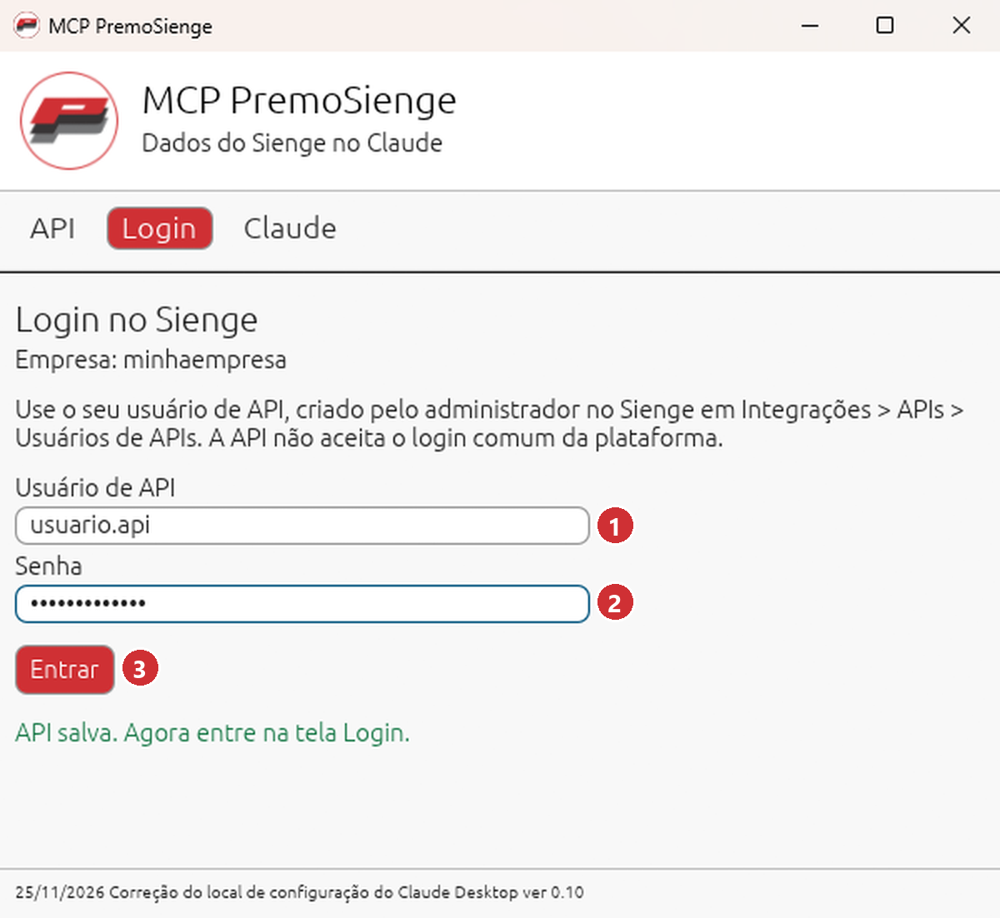
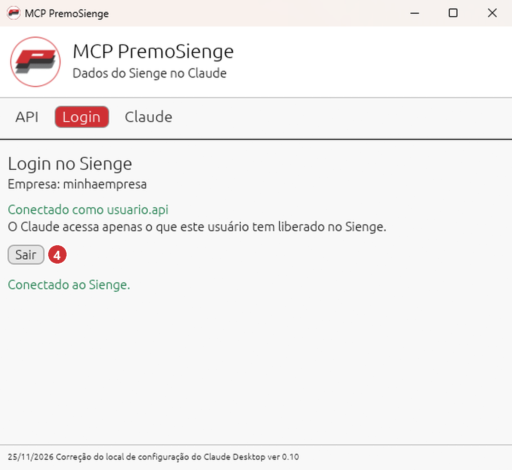
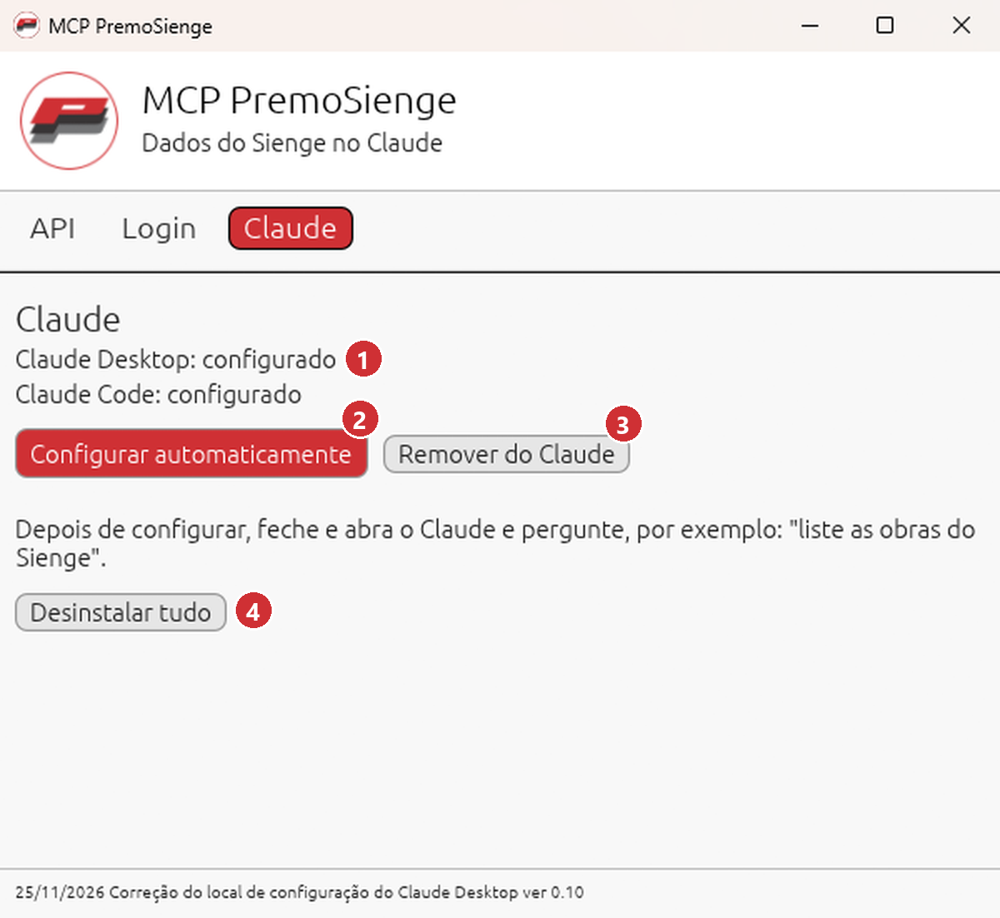
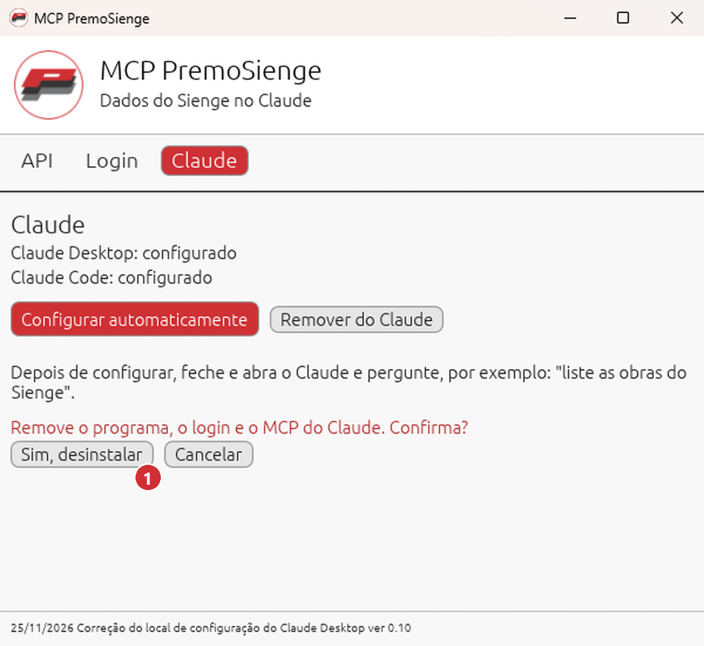

Manual de instalação e uso
O MCP PremoSienge liga o Sienge ao Claude. Depois de configurado, você pergunta em português e o Claude busca a resposta no Sienge, dentro do que o seu usuário pode ver.
https://minhaempresa.sienge.com.br, é minhaempresa.O usuário e a senha comuns do Sienge não funcionam na API. Crie um usuário de API por pessoa:
Instalador-MCP-PremoSienge.exe e clique em Instalar.


Se trocar o subdomínio depois, o login atual é encerrado e é preciso entrar de novo.


O instalador já faz esta configuração. Use esta tela para conferir, refazer ou remover.

Abra Configurações > Aplicativo para desktop, clique em Gerenciar ao lado de Extensões e procure Servidores MCP locais. Em versões anteriores, fica em Configurações > Desenvolvedor.
Ilustração.
premosienge.Clique no botão + da caixa de mensagem e passe o mouse em Conectores. O premosienge aparece na lista e deve estar ligado.
Ilustração.
Ao usar uma ferramenta, o Claude pede a sua autorização:
{
"caminho": "/public/api/v1/enterprises",
"parametros": { "limit": 50 }
}
Sempre permitir1Permitir uma vez2Negar3
Ilustração. O conteúdo mostra a consulta que será feita.
O MCP não grava nada no Sienge, qualquer que seja a opção.
São quatro, todas de leitura:
| Nome no Claude | Para que serve | Gasta cota |
|---|---|---|
Status da conexãosienge_status | Versão, empresa e usuário conectado. | Não |
Listar consultas disponíveissienge_listar_recursos | Procura no catálogo o que pode ser consultado. | Não |
Detalhar uma consultasienge_detalhar_recurso | Mostra os filtros de uma consulta. | Não |
Consultar dados do Siengesienge_consultar | Busca os dados no Sienge. | Sim, 1 por consulta |
O instalador grava este trecho em claude_desktop_config.json, na pasta %LOCALAPPDATA%\Claude-Data\claude_… (versões recentes) ou %APPDATA%\Claude (anteriores). Outros MCPs do arquivo são mantidos, e uma cópia de segurança é criada na mesma pasta.
{
"mcpServers": {
"premosienge": {
"command": "C:\\Users\\seu.usuario\\AppData\\Local\\Programs\\MCP-PremoSienge\\premosienge.exe",
"args": [
"mcp"
]
}
}
}
O usuário e a senha do Sienge não ficam neste arquivo.
No terminal, o comando abaixo mostra se está conectado:
claude mcp get premosienge premosienge: Scope: User config (available in all your projects) Status: ✔ Connected Type: stdio Command: C:\Users\seu.usuario\AppData\Local\Programs\MCP-PremoSienge\premosienge.exe Args: mcp
Saída real do Claude Code, resumida e com o caminho da pasta trocado.
Abra uma conversa no Claude e pergunte normalmente. Na primeira vez, o Claude pede permissão para usar as ferramentas do Sienge, como mostra a seção 6.
| Assunto | Pergunta |
|---|---|
| Conexão | Estou conectado ao Sienge? Com qual usuário? |
| Obras | Liste as obras do Sienge. |
| Contas a pagar | Quais títulos a pagar foram lançados entre 01/10/2026 e 31/10/2026? |
| Compras | Mostre os pedidos de compra da obra 12 em outubro, por fornecedor. |
| Estoque | Qual o estoque atual do centro de custo 12? |
| Orçamento | Quais são as planilhas de orçamento da obra 12? |
| Vendas | Liste os contratos de venda do empreendimento 5. |
| O que existe | Quais consultas do Sienge estão disponíveis sobre medições? |
A resposta depende do que o seu usuário de API tem liberado.
| O que aparece | O que fazer |
|---|---|
| API não configurada | Preencha o subdomínio na tela API. |
| Nenhum usuário conectado | Entre na tela Login. |
| Não autorizado (401) | Confira usuário e senha de API. Pode ser também senha expirada, usuário inativo ou recurso não liberado: fale com o administrador. |
| Sem permissão (403) | Seu usuário não tem acesso a essa consulta. Peça a liberação ao administrador. |
| Registro não encontrado (404) | Confira o código informado e o subdomínio na tela API. |
| Limite de consultas atingido (429) | Aguarde um minuto. Se continuar, a cota do dia acabou. |
| Sienge indisponível (503) | O Sienge pode estar em manutenção, entre 00:00 e 06:30. |
| Sem conexão com o Sienge | Confira a internet e o firewall. O endereço usado é api.sienge.com.br. |
| O Claude não mostra o Sienge | Feche o Claude por completo, inclusive o ícone perto do relógio. Na tela Claude do programa, clique em Configurar automaticamente e só então abra o Claude. |
| Claude não encontrado neste computador | Instale o Claude e clique em Configurar automaticamente. |
| Arquivo não é um JSON válido | A configuração do Claude está danificada e nada foi alterado. Peça ajuda ao responsável pela TI. |
Abra o novo Instalador-MCP-PremoSienge.exe e clique em Instalar. O login e o subdomínio são mantidos. Depois feche e abra o Claude. A versão em uso aparece no rodapé da janela.

Feche a janela para terminar. Também é possível desinstalar em Configurações > Aplicativos do Windows.